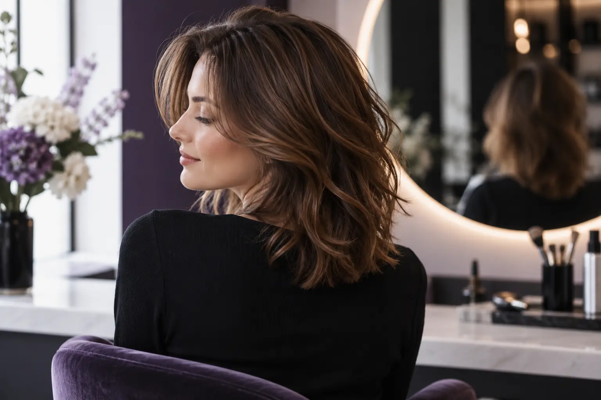

Sluoksniuotas kirpimas: kas keičiasi plaukų formoje ir priežiūroje?
Autorius: Madbeauty redakcija · Numatyta 2026 m. spalio 28 d. 10:00 (Lietuvos laiku)
Supraskite, kaip sluoksniai paskirsto plaukų ilgius, gali keisti siluetą ir ką aptarti pagal savo plaukų tekstūrą bei kasdienį formavimą.

Sluoksniuojant vienos plaukų dalys paliekamos trumpesnės už kitas. Kur jos prasideda ir kiek skiriasi ilgiai, keičia bendrą kirpimo siluetą, galiukų pilnumo įspūdį ir tai, kaip plaukai gula. Sluoksniai savaime negarantuoja daugiau apimties ar lengvesnės priežiūros: vaizdas priklauso nuo plaukų tekstūros, tankio, ilgio ir formavimo įpročių.
Ką keičia ilgių paskirstymas
Įsivaizduokite išorinį plaukų kontūrą kaip pagrindą, o trumpesnes sruogas – kaip jo viduje išdėstytus ilgius. Kai ilgių skirtumas nedidelis, perėjimas gali būti sunkiau pastebimas. Ryškesni skirtumai labiau keičia formą ir galiukų vaizdą. Tai apibūdina bendrą principą, o ne konkretų kirpimo brėžinį: tikslus rezultatas priklauso nuo pasirinktos formos ir kirpimo technikos.
- Jei svarbu išsaugoti ilgį ir pilnesnį galiukų kontūrą, aptarkite, kiek trumpesnių sluoksnių iš tiesų reikia.
- Jei norisi daugiau judėjimo, parodykite, kuriose vietose norėtumėte matyti trumpesnes sruogas, pavyzdžiui, aplink veidą ar viršugalvyje.
- Jei kirpimą norite formuoti kuo paprasčiau, iš anksto aptarkite, kaip pasirinkta forma atrodys be įprasto džiovinimo ar sušukavimo.
Judėjimas ir apimtis nėra tas pats
Trumpesnės sruogos gali suteikti siluetui daugiau išskirtų linijų ir judėjimo įspūdį. Tačiau sluoksniai ne visada reiškia, kad plaukai atrodys puresni. Jei ilgiai, tekstūra ar norimas kontūras nesuderinti, galiukai gali atrodyti retesni, o trumpesnes sruogas gali reikėti dažniau formuoti. Todėl verta aptarti ne vien žodį „apimtis“, bet ir tai, kurioje galvos vietoje norite pokyčio bei kokio galiukų vaizdo tikitės.
Tekstūra keičia galutinį vaizdą
Tiesūs, banguoti ir garbanoti plaukai krenta skirtingai, todėl tą patį sluoksnių išdėstymą gali reikėti vertinti pagal savo natūralią tekstūrą. Jei dažniausiai nešiojate plaukus natūraliai, parodykite juos tokios būklės, kokios paprastai būna išdžiūvę. Jei dažniau juos tiesinate ar formuojate bangomis, pasakykite ir tai: aptarkite tiek kasdienį, tiek norimą suformuotą vaizdą. Tai padeda susitarti, ką kirpimas turėtų daryti abiem atvejais.
Kasdienė priežiūra priklauso nuo formavimo
Sluoksniuotas kirpimas savaime nenustato vienos priežiūros rutinos. Trumpesnės sruogos gali kristi kitaip nei ilgesnės, tad aptarkite, kaip jas formuoti taip, kaip iš tikrųjų nešiojate plaukus. Nurodykite, kiek laiko norite skirti džiovinimui ir ar paprastai naudojate šepetį ar kitą įrankį. Jei patogumas svarbesnis už ryškų suformuotą siluetą, pasakykite tai prieš renkantis sluoksnių intensyvumą.
Trumpas aptarimo planas
- Parodykite nuotrauką, kurioje matyti norimas kontūras, ir nurodykite, ką tiksliai joje norite išsaugoti.
- Pasakykite, ar jums svarbiausia išlaikyti ilgį, išryškinti judėjimą, ar pakeisti formą aplink veidą.
- Apibūdinkite, kaip plaukus nešiojate įprastą dieną, o ne tik kaip jie atrodo po kruopštaus formavimo.
- Paprašykite paaiškinti, kur prasidėtų trumpesni ilgiai ir kaip tai paveiktų galiukų pilnumo įspūdį bei kasdienį formavimą.
Jei norite peržiūrėti paslaugos kryptį, Madbeauty nacionalinėje kategorijoje rasite Kirpimas. Miestą pasirinkite atskirai. Kategorija nepatvirtina konkretaus meistro, laisvo laiko ar vietinės pasiūlos.
Planuojamos vidinės nuorodos
Šaltiniai peržiūrai
- Level 2 Hair Professionals handbook: consultation, cutting, styling and glossary — Read Unit203/204 factors, and glossary pp93–97: outline versus layered/graduated lengths, density/texture/growth, styling versus cutting. No single definition covers all bob/carré names; no guaranteed volume or maintenance result. This is published curriculum, not actual human stylist review.